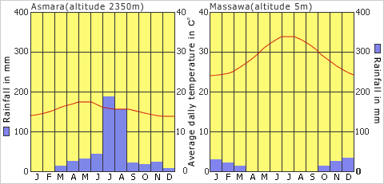
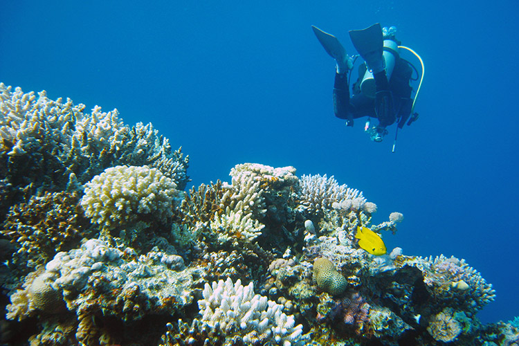
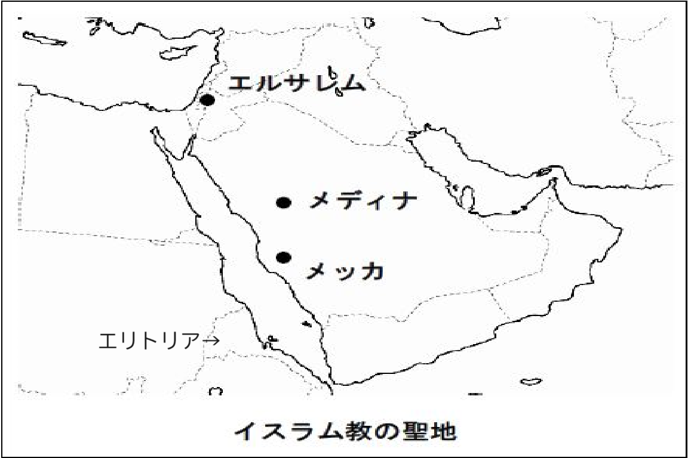
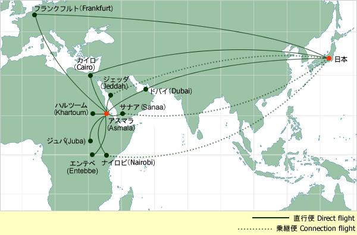
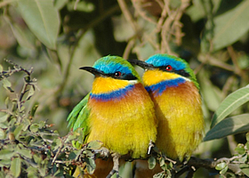
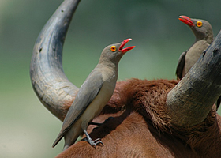

エリトリアはアフリカの北東部に位置する国です。
イタリアの植民地として発展し、1993年に独立しました。
アフリカの北朝鮮とも呼ばれる独裁国家でもあります。
高原地帯の首都アスマラは、年間平均気温が16℃、降水量は508mmで、一年中過ごしやすい快適な気候ですが、
沿岸部のマッサワでは、年間平均気温は30℃で、年間降水量は205mmであり、国内での気候差が激しめです。
面積 11.76万平方km
人口 382万人
紅海では、ダイビングが人気です
紅海は、大河川が流入しないため、他の海域に比べて非常に透明度が高く、
エリトリアの紅海には、世界中から透明度の高い美しい海を求めて、ダイバーたちが集まってきます。
4世紀に国教化されたキリスト教が50％、メッカやメディナ、エルサレムに近いことで広まったイスラム教が50％の割合で信仰されています。
日本からの直行便はないので、ドイツのフランクフルトやアラブのドバイを経由することで訪れることができます。
片道 20時間以上!
エリトリアには、560種を超える野鳥がいます。
アビシニア高原は、エリトリア・エチオピア両国にまたがり、少なくとも32種のここにしか見られない固有の種が生息していますが、
エリトリア側には、少なくとも17種が生息しています。
他にも熱帯雨林や海抜3000ｍを超える高山地帯、世界で最も暑い平原であるダンカリヤ、ガシュバルカ地方の広大なアカシア林、1000kmを越える海岸線など、自然に囲まれています。

GDPに占める農業シェアは18％でアフリカでは29番目です。
アフリカの中ではあまり高く見えませんが、日本などと比べると多いことが分かります。